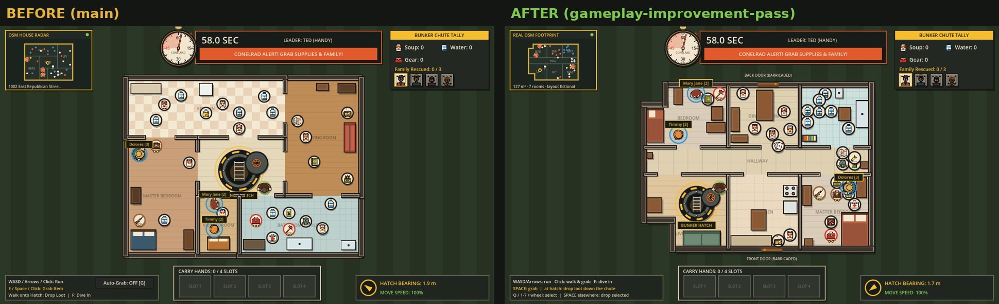
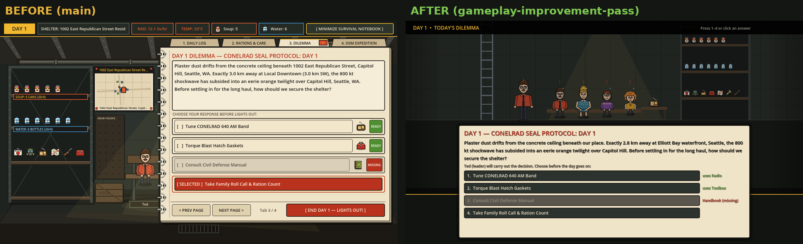
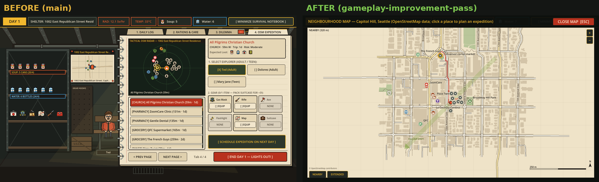
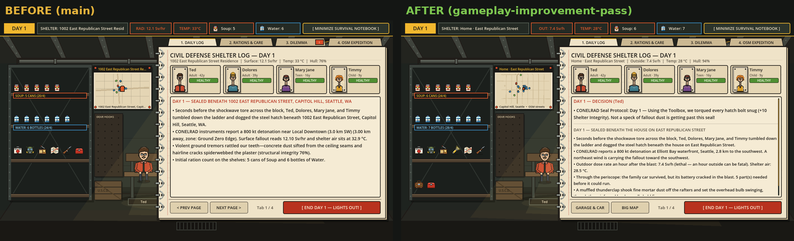
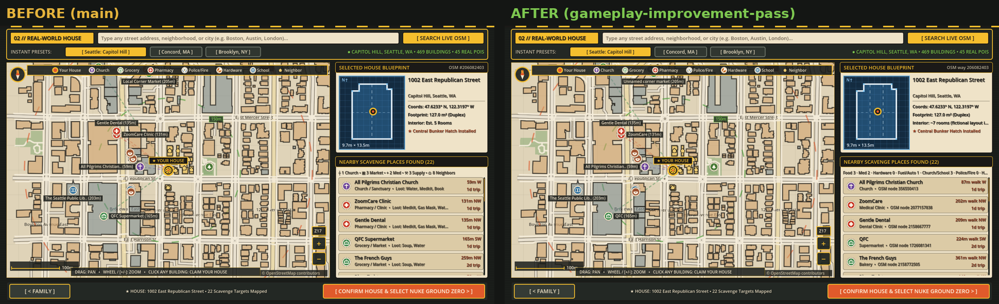
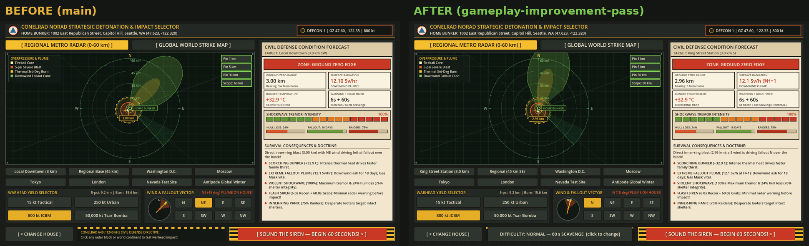

Gameplay Improvement Pass — preview build
Real-footprint floorplans, a genuinely hard 60/30-second scavenge, honest OpenStreetMap places, finite loot, location-driven radiation, cinematic daily dilemmas, and a repairable car. The live game at the site root is unchanged until the pull request is merged.
Play the preview buildControls: WASD/arrows move · SPACE grabs, deposits at the hatch, drops elsewhere · Q / 1–7 select a carried slot · F dives in · TAB skips recon · in the shelter, press 1–4 to answer a dilemma and SPACE to continue.
Gameplay footage
Full demo: family → real house → strike → autopilot scavenge → four shelter days with animated outcomes and an expedition return.
Keyboard-driven shelter days, a recovered part on the storage rack, installing the battery by hand, and driving out of Capitol Hill.
Hard mode, keyboard only: 30 seconds of scavenging in the real 1002 E Republican St footprint (one family member left behind).
Before → after






Interiors are fictional approximations generated inside each building's real OpenStreetMap outline. Map data © OpenStreetMap contributors.